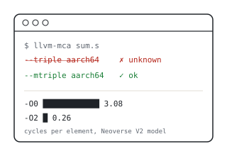
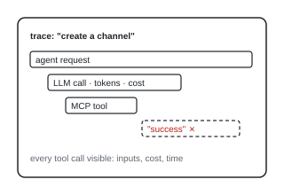
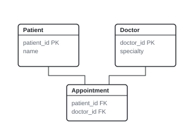

Jasper Galton-Fenzi
BSc Artificial Intelligence student · Anglia Ruskin University, Cambridge
About
I'm an AI student at Anglia Ruskin University in Cambridge. I've always been the family tech support, especially for my dad, and that's what got me into this. I went from taking apart old laptops to programming, because I wanted to see how software actually talks to the hardware.
This summer I was a software engineering intern at Clear-Com. In October I found a bug in Arm's MCP server, and Arm merged my fix.
I'm looking for a 12-month placement starting summer 2027.
Projects

Arm MCP Server: open-source fix
Found that the mca tool in Arm's MCP server passed the wrong flag to llvm-mca, so one of its options had never worked. Fixed it, added a regression test, and Arm merged it into main.

Tracing an AI configuration tool
Added tracing to an AI feature that configures intercom systems by chat, so developers could see every tool call's inputs, cost and time. Found three places where the system said "success" without doing the work.

The Sniff Test
A web page that flags scam and high-pressure sales tactics in text you paste in. Runs entirely in your browser, so nothing is sent anywhere.


University team projects
Software Engineering: project lead and developer on a five-person team building a C# web app, due December 2026. I picked SQLite so the whole team could develop on macOS.
Database Design: designing and building a hospital management database in SQL with my team.
Experience
- Software Engineering Intern, Clear-Com, Cambridge Research Park · Jun – Sep 2026
- IT Support Specialist, Buss Murton Law · Jan 2023 – Jun 2024
- CompTIA Security+ certified · IET student member